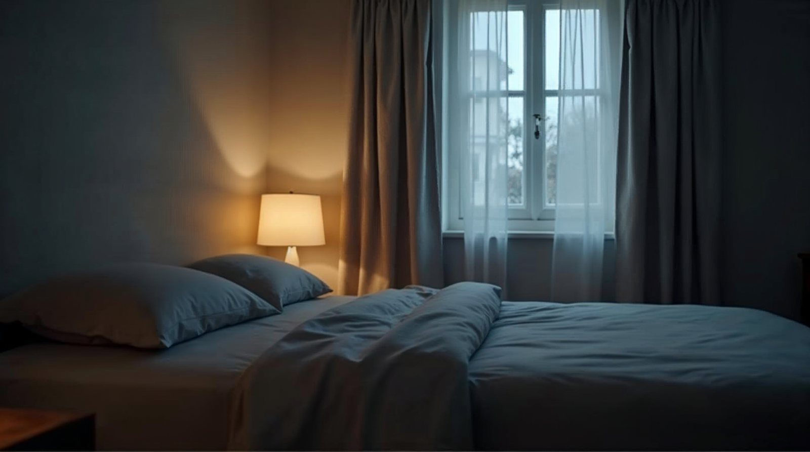

잠들기까지 오래 걸릴 때는 눕는 시각과 낮의 카페인, 자기 전 화면, 걱정과 몸의 긴장을 먼저 묻고 생활 리듬을 함께 정리하며 우울감이나 수면무호흡이 의심되면 해당 진료를 먼저 권합니다.
여쭙는 것
- 보통 몇 시에 눕고, 잠들기까지 얼마나 걸리나요?
- 커피·차·에너지 음료는 하루 몇 잔이고 마지막은 몇 시인가요?
- 자기 전 한 시간 동안 주로 무엇을 하나요? (휴대폰, 영상, 일, 운동)
생활에서 해 볼 것
- 기상 시각은 주말에도 한 시간 안쪽으로만 바꾸기
- 카페인은 점심 무렵까지만 마시고 오후에는 따뜻한 물이나 보리차로 바꾸기
- 잠자리 한 시간 전부터 조명을 낮추고 휴대폰은 침실 밖에 두기
한의원에서 함께 살필 것
- 잠들기까지 오래 뒤척이며 몸과 마음이 긴장해 있는 경우 잠들기 전 몸의 온기와 호흡…
- 저녁만 되면 생각이 많아지고 가슴이 답답한 경우 하루의 긴장이 어디에 쌓이는지 함께…
- 잠이 늦어지면서 아침을 거르고 소화가 더딘 경우 식사 시간과 소화 상태를 함께 살핍…
먼저 확인이 필요한 신호
- 우울감이 깊거나 극단적인 생각이 드는 경우
- 코를 크게 골고 숨이 멎는 것 같다는 말을 들은 경우
- 다리가 불편해 움직여야만 잠들 수 있는 경우

누워서 한 시간 넘게 뒤척이는 밤이 이어지면 잠자리에 드는 것 자체가 부담이 됩니다. 한의원에서는 잠드는 데 걸리는 시간보다 먼저, 어떤 날 더 오래 걸리는지와 낮을 어떻게 보냈는지를 함께 여쭙니다. 원인을 하나로 단정하기보다 하루의 리듬 속에서 단서를 찾는 것이 출발점입니다.
왜 이런 불편이 생길 수 있나요
- 오후 늦게 마신 커피·녹차·에너지 음료의 카페인이 밤까지 남아 잠드는 시각을 늦출 수 있습니다.
- 자기 직전까지 보는 밝은 화면과 일 생각은 몸에 아직 쉴 때가 아니라는 신호를 줄 수 있습니다.
- 낮잠이 길거나 낮 활동이 적으면 밤에 졸음이 충분히 쌓이지 않는 경우가 있습니다.
- 걱정과 긴장이 몸에 남아 어깨와 턱이 굳어 있으면 누워도 쉽게 풀리지 않습니다. 한의학에서는 이런 긴장과 함께 소화, 몸의 온기도 함께 살핍니다.
자주 하는 오해
- 일찍 누우면 빨리 잠들 거라 생각하기 쉽지만, 졸리지 않을 때 누우면 뒤척이는 시간만 길어지기 쉽습니다.
- 잠이 안 오면 누워서라도 쉬어야 한다고 여기기 쉽지만, 잠자리에서 오래 뒤척이면 침대가 긴장하는 장소로 기억될 수 있습니다.
- 주말에 늦잠으로 몰아 자면 회복된다고 생각하기 쉽지만, 일요일 밤 잠들기가 더 어려워지는 경우가 많습니다.
- 잠이 안 오는 밤을 하루라도 겪으면 큰일이라고 느끼기 쉽지만, 하루 이틀보다 몇 주의 흐름이 더 중요합니다.

예를 들면 이런 경우입니다
- 예를 들어 퇴근 뒤 밤 11시까지 노트북으로 일을 마무리하고 바로 눕는 직장인이라면, 일을 끝내는 시각을 정하고 잠자리 전 30분은 화면 없이 보내는 것부터 시작합니다.
- 예를 들어 오후에 커피를 두세 잔 마시며 버티는 수험생이라면, 마지막 커피 시각을 점심 무렵으로 당기고 기상 시각을 먼저 고정해 봅니다.
- 예를 들어 아이를 재운 뒤에야 혼자만의 시간이 생겨 휴대폰을 보다 늦게 잠드는 부모라면, 그 시간을 줄이기보다 화면 대신 쉴 수 있는 방법을 함께 찾습니다.
먼저 이렇게 여쭙니다
- 보통 몇 시에 눕고, 잠들기까지 얼마나 걸리나요?
- 커피·차·에너지 음료는 하루 몇 잔이고 마지막은 몇 시인가요?
- 자기 전 한 시간 동안 주로 무엇을 하나요? (휴대폰, 영상, 일, 운동)
- 누우면 생각이 많아지나요, 몸이 긴장되나요, 둘 다인가요?
- 주말과 평일의 기상 시각은 얼마나 다른가요?
- 잠을 못 잔 날 통증이나 소화가 더 불편해지나요?
스스로 점검해 보세요
- 잠들기까지 30분 넘게 걸리는 날이 일주일에 세 번 이상이다
- 오후 3시 이후에도 커피나 에너지 음료를 마신다
- 잠자리에서 휴대폰을 본다
- 누우면 내일 일이나 걱정이 이어진다
- 어깨나 턱에 힘이 들어가 있는 것을 자주 느낀다
- 평일과 주말의 기상 시각이 두 시간 넘게 차이 난다
- 잠을 못 잔 날 통증이나 식욕이 더 커진다
해당하는 것이 많다면 잠드는 순간보다 하루의 흐름에서 바꿀 것을 먼저 찾아보시면 좋습니다.

일상에서 먼저 해 볼 수 있는 것
- 기상 시각은 주말에도 한 시간 안쪽으로만 바꾸기
- 카페인은 점심 무렵까지만 마시고 오후에는 따뜻한 물이나 보리차로 바꾸기
- 잠자리 한 시간 전부터 조명을 낮추고 휴대폰은 침실 밖에 두기
- 졸릴 때 눕고, 20분 넘게 잠이 오지 않으면 잠시 일어나 조용히 앉아 있다가 졸릴 때 다시 눕기
- 걱정이 이어지면 저녁 일찍 종이에 적어 두고 잠자리에서는 다시 꺼내지 않기
- 저녁에 20~30분 천천히 걷기
- 잠들기 1~2시간 전 따뜻한 물로 샤워하거나 몸 담그기
한의원에서 함께 살필 수 있는 경우
- 잠들기까지 오래 뒤척이며 몸과 마음이 긴장해 있는 경우 잠들기 전 몸의 온기와 호흡의 리듬을 함께 살핍니다.
- 저녁만 되면 생각이 많아지고 가슴이 답답한 경우 하루의 긴장이 어디에 쌓이는지 함께 살핍니다.
- 잠이 늦어지면서 아침을 거르고 소화가 더딘 경우 식사 시간과 소화 상태를 함께 살핍니다.
좋은꿈참사랑한의원에서는 먼저 잠이 흐트러진 과정을 충분히 듣고, 진맥을 기본으로 하고 필요하다고 판단될 때 설진을 더해 몸 상태를 살핀 뒤 침이나 한약 상담 등 지금 상태에 맞는 방법을 정합니다. 귀가 전에는 집에서 지켜볼 점과 다음에 확인할 일을 알려 드립니다.
첫 방문에는 수면 일기나 기억나는 잠의 모습을 보며 잠드는 시각, 깨는 횟수, 낮의 컨디션을 여쭙고 진맥과 설진, 복진으로 소화와 몸의 긴장, 온기를 살핍니다. 다시 오시면 지난번에 정한 생활 조정을 해 보셨는지, 잠드는 시간이 어떻게 달라졌는지부터 이어서 여쭙습니다.
얼마나 지켜보고, 언제 상담하면 좋을까요
- 기상 시각 고정, 카페인 시각 조정 같은 변화는 적어도 2주는 이어 가며 수면 일기에 적어 보세요.
- 잠들기 어려운 날이 일주일에 세 번 이상, 한 달 넘게 이어진다면 상담을 받아 보시길 권합니다.
- 기분이 가라앉아 일상이 어렵거나 코골이·숨 멈춤이 있다면 기다리지 말고 해당 진료를 먼저 받으세요.

이렇게 기록해 오시면 상담이 쉬워집니다
- 1~2주 동안 누운 시각, 잠든 것 같은 시각, 깬 시각을 적은 수면 기록
- 오후 카페인과 술을 마신 시각
- 잠들기 어려웠던 날 낮에 있었던 일과 걱정
- 복용 중인 수면제·안정제 등 약 이름과 용량
이런 증상은 먼저 확인이 필요합니다
- 우울감이 깊거나 극단적인 생각이 드는 경우
- 코를 크게 골고 숨이 멎는 것 같다는 말을 들은 경우
- 다리가 불편해 움직여야만 잠들 수 있는 경우
- 낮에 참을 수 없이 졸려 운전이나 일이 위험한 경우
복용 중인 수면제나 다른 약은 처방한 의사와 상의 없이 줄이거나 끊지 않습니다. 극단적인 생각이 들 때는 혼자 견디지 말고 109(자살예방상담전화)나 119에 바로 연락하세요.
함께 읽으면 좋은 글
- 수면 일기는 어떻게 쓰면 진료에 도움이 되나요?
- 걱정이 많아서 잠이 안 올 때는 어떻게 살피나요?
- 자기 전 목욕은 잠에 도움이 될까요?
한눈에 보는 표
| 구분 | 핵심 |
|---|---|
| 여쭙는 것 | 보통 몇 시에 눕고, 잠들기까지 얼마나 걸리나요? 커피·차·에너지 음료는 하루 몇 잔이고 마지막은 몇 시인가요? |
| 생활에서 해 볼 것 | 기상 시각은 주말에도 한 시간 안쪽으로만 바꾸기 카페인은 점심 무렵까지만 마시고 오후에는 따뜻한 물이나 보리차로 바꾸기 |
| 한의원에서 함께 살필 것 | 잠들기까지 오래 뒤척이며 몸과 마음이 긴장해 있는 경우 잠들기 전 몸의 온기와 호흡의 리듬을 함께 살핍니다. 저녁만 되면 생각이 많아지고 가슴이 답답한 경우 하루의 긴장이 어디에 쌓이는지 함께 살핍니다. |
| 먼저 확인이 필요한 신호 | 우울감이 깊거나 극단적인 생각이 드는 경우 코를 크게 골고 숨이 멎는 것 같다는 말을 들은 경우 |
자주 묻는 질문
잠이 안 오는 날은 누워서 계속 버티는 게 나은가요?
오래 누워 뒤척이면 잠자리와 긴장이 연결되기 쉬워, 20분 넘게 잠이 오지 않으면 잠시 일어나 조용히 있다가 졸릴 때 다시 눕는 방법을 권합니다.
수면제를 먹고 있어도 진료받을 수 있나요?
네. 복용 중인 약을 모두 알려 주세요. 약은 임의로 끊거나 줄이지 말고 처방한 의사와 상의해야 합니다.
얼마나 지나야 달라지나요?
변화의 정도와 기간은 사람마다 다릅니다. 잠드는 데 걸리는 시간을 기록하며 생활 리듬을 함께 조정해 갑니다.
잠이 안 올 때 눈을 감고 누워만 있어도 쉬는 건가요?
몸은 쉬지만 오래 뒤척이면 잠자리가 긴장되는 곳으로 기억될 수 있어, 20분 넘게 잠이 오지 않으면 잠시 일어났다가 졸릴 때 다시 눕기를 권합니다.
이 글은 일반적인 건강 정보이며 개인의 진단이나 치료를 대신하지 않습니다. 증상이 있거나 복용 중인 약이 있다면 진료를 통해 확인하세요. 치료 효과는 개인마다 다를 수 있습니다.
작성 기준: 일반적으로 알려져 있는 건강 정보를 참고해 정리했습니다(대표원장 감수). 증상 기록은 1~2주 동안 하루 1회, 비슷한 시간에 적어 오시면 지난 상태와 비교하기 쉽습니다.
좋은꿈참사랑한의원은 재진 때 지난번 이야기부터 이어서 여쭙니다. 진료시간과 예약은 오시는 길에서 확인하세요.